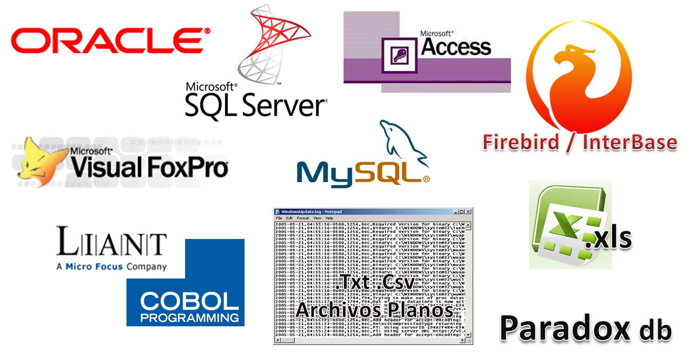

Clase 1: Introducción a Bases de Datos
Objetivo
- Explicar qué es una base de datos.
- Comprender qué es un gestor de base de datos.
- Identificar las funciones de un Sistema Gestor de Base de Datos.
Contenido
Introducción
La unidad didáctica de Base de Datos comprende los procesos necesarios para la implementación de bases de datos acorde a los requerimientos de la organización, considerando criterios de normalización, seguridad y ética profesional.
Dato
Un dato constituye un hecho o acontecimiento medido o registrado, es decir, la representación de algo que ocurre o la descripción de un objeto o de su estado. También, un dato es una representación formalizada de hechos, conceptos o instrucciones, adecuada para la comunicación, interpretación y procesamiento por medios humanos o automáticos.
Información

La información está constituida por un grupo de datos ya supervisados y ordenados, que sirven para construir un mensaje basado en un cierto fenómeno o ente. La información permite resolver problemas y tomar decisiones, ya que su aprovechamiento racional es la base del conocimiento.
Informática
Es una ciencia que estudia el tratamiento automático de la información. La información son los datos y el tratamiento automático de estos datos se hace mediante los sistemas informáticos, que son las computadoras.
Base de Datos
Es un conjunto de información almacenada en una estructura de ficheros en disco, que será consultada y modificada por los usuarios que acceden a la misma, siendo el Sistema Gestor de Base de Datos (en adelante SGBD) el encargado de llevar físicamente a cabo estas operaciones.
Características de una base de datos
- Independencia lógica y física de los datos.
- Redundancia mínima.
- Acceso concurrente por parte de múltiples usuarios.
- Integridad de los datos.
- Consultas complejas optimizadas.
- Seguridad de acceso y auditoría.
- Respaldo y recuperación.
¿En qué se diferencia una Base de Datos de los archivos tradicionales?
Una base de datos es un archivo, existen diferentes tipos de archivos, como de texto, imágenes, pistas de audio, video, entre otras, junto con los archivos de bases de datos. Cada tipo de archivo tiene sus características únicas que los diferencian y programas específicos que nos permiten hacer uso de ellos. En el caso de las bases de datos, tienen una estructura organizacional que permite contener de forma ordenada datos de diferentes tipos...
Sistema Gestor de Datos
El Sistema Gestor de Bases de Datos (SGBD) es un software que proporciona servicios para la creación, el almacenamiento, el procesamiento y la consulta de la información almacenada en base de datos de forma segura y eficiente.
Funciones de un Sistema Gestor de Base de Datos
Los SGBD pueden considerarse como intermediarios entre las aplicaciones y la representación de los datos, proporcionando independencia de los datos y las aplicaciones.
Niveles:
- Físico
- Lógico
- Vistas
Ventajas de utilizar un Sistema Gestor de Base de Datos
- Seguridad de los datos
- Control o manipulación de datos
- Actualización de los datos en línea
- Reducción de tiempos
- Mantener organización coherente de los datos
- Simplificación del trabajo
- Generación de informes a partir de los datos
- Accesos concurrentes a las BD